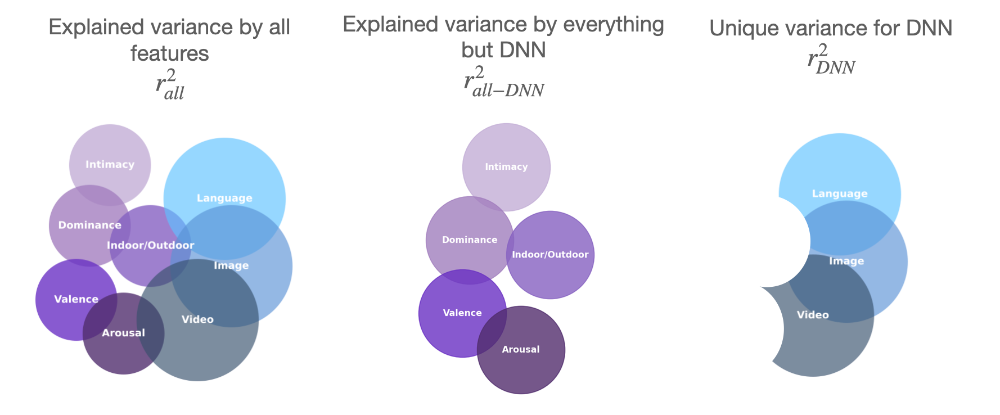

SemantiCL: Enhancing Continual Vision-Language Learning via Conceptual Prototypes
SemantiCL: Enhancing Continual Vision-Language Learning via Conceptual Prototypes
Abstract
How do humans perceive naturalistic social scenes, especially in dynamic contexts? Similarity judgments offer critical insight into the mental representations humans use to perceive actions, form categories,
and predict behavior. Real-world perception is complex and dynamic, involving features that static representations fully cannot capture. While prior research has focused on static scenes, less is understood about
the features driving human similarity judgments in dynamic settings and their alignment with representations learned by deep neural networks (DNNs). To address this, we collected ~65,000+ similarity
judgments with a triplet odd-one-out task generated from a curated dataset of 250 three-second videos depicting everyday human actions—a scale far exceeding comparable studies. We then constructed a similarity
matrix for all 250 videos, computing p(i, j), the likelihood of participants selecting stimuli i and j as similar when paired with different third videos. Finally, these similarity judgments were compared to human ratings
across visual and social scene features, fMRI responses, video DNN extractions, and word embeddings derived from human-written captions, using representational similarity analysis (RSA). The results reveal striking patterns
in human perception: word embeddings of video captions, reflecting how humans choose to describe the videos, showed the strongest correlation with overall similarity judgments, followed by ratings of “intimacy”
(relational closeness) and video DNN embeddings. Similarity judgements correlated significantly with neural responses in regions, including EBA, LOC, STS (lateral stream) and FFA (ventral stream), but not early visual
(EVC) or scene-specific (PPA) areas, underscoring the dominance of social over scene features. Together, these findings highlight the alignment between linguistic descriptions and cognitive strategies, revealing how verbal
encodings of social features capture key mental processes shaping our understanding of dynamic social scenes.
Behavioral Feature Dimensions

Left: Features are grouped into five domains: scene and object features (yellow), social primitive features (purple), social interaction features (blue), affective features (pink), and social appraisal features (orange). Right: Example frames from two videos are shown alongside their behavioral feature ratings, as indicated by the bar graphs. The colored bars correspond to the feature domains at left. Arrows highlight the dominant feature for each video, illustrating how different types of social events are distinguished by their behavioral profiles.
Triplet Odd-One-Out Task
Participants were presented with three videos and asked to select the odd-one-out while focusing on what people are doing. The two videos not chosen are labeled as "similar" and the odd-one-out selection is labeled as dissimilar to both others. With this method, we collected 3 pairwise similaritty judgments for each triplet.
RSA Overview
To reveal the representations that best align with human perception of social events, we began with a set of 3-second social videos from the MiT dataset. For each video, we extracted behavioral features (e.g., ratings of positivity and interaction type) and deep neural network (DNN) features from prior benchmarking work. Each of these sources was used to generate a representational similarity matrix (RSM) that quantified how similarly the videos were represented by each source. In parallel, we collected human similarity judgments using a triplet odd-one-out task, where participants viewed sets of three videos and selected the one least similar to the others. Aggregating over thousands of such choices, we constructed a similarity probability: the similarity probability for each video pair was computed as the proportion of times that pair was judged as similar when presented together. This resulted in a 200 x 200 matrix capturing perceived similarity among all video pairs in the train set. Finally, we performed representational similarity analysis (RSA) to directly compare the human-derived similarity probability matrix with RSMs derived from behavioral features and DNNs. This framework allowed us to systematically assess which source best captures the structure of human social perception.
Behavioral and DNN Model Alignment with Human Similarity Judgments

Left: Explained variance (R²) in human similarity judgments for individual behavioral features. Asterisks indicate features that reached statistical significance (p < 0.05). The dashed horizontal line denotes the split-half reliability (0.252), representing the noise ceiling. The feature "intimacy" (a higher-order social-affective construct) explains the most variance, followed by "dominance," while lower-level perceptual and social interaction features explain less variance. Right: Explained variance for over 350 deep neural network models, grouped by modality (language, image, and video). Each dot represents the best-performing layer of a model. Language models exhibited the strongest overall alignment with human similarity judgments, with Multilingual MPNet-v2 as the top-performing language model. Among image models, CLIP (ViT-B/32) performed best, while for video models, X3D-M achieved the highest alignment with human judgments.
Variance Partitioning

Variance Paritioning Methods. We used variance partitioning to quantify the unique and shared contributions of different feature sets to explaining human similarity judgments. (Left) Explained variance when including all feature sets: behavioral attributes (intimacy, dominance, indoor/outdoor, valence, arousal) and model-derived representations (language, image, video DNNs). (Center) Explained variance by all behavioral attributes, excluding DNN features, highlights the variance captured by interpretable features alone. (Right) Unique variance explained by DNN models, after accounting for all other features, reveals the distinct contribution of language, image, and video DNNs to human similarity judgments.

(a) Variance partitioning for behavioral features, showing the unique variance (UV; purple) explained by each feature and the shared variance (gray) across all features. Intimacy provides the largest unique contribution among behavioral features. (b) Unique and shared variance explained by language, image, and video DNN models, with language models accounting for the most unique variance among DNNs. Together, DNNs explain a greater total variance than behavioral features alone. (c) Partitioning of variance explained when combining behavioral features and DNNs. While a substantial portion of variance is shared between the two sources (gray), DNNs explain meaningful unique variance not captured by behavioral features, and vice versa. The combined total approaches the split-half reliability ceiling (dashed line), indicating that together, DNN and behavioral features provide a comprehensive account of the explainable variance in human similarity judgments for social videos.
Neural Variance Explained by Social Similarity Judgments
(a) Neural RSA. Bar plot showing the proportion of variance (R²) in human similarity judgments explained by different lateral (left) and ventral (right) brain regions of interest (ROIs). Mid-level lateral ROIs, particularly EBA (extrastriate body area) and LOC (lateral occipital complex), explain the greatest variance, followed by MT and pSTS regions, indicating that mid- and high-level social perception areas are most strongly aligned with behavioral similarity structure. Early visual cortex (EVC) and the scene-selective PPA (parahippocampal place area) show little to no alignment, suggesting low-level visual and scene features are not major drivers of social similarity judgments. The face-selective FFA (fusiform face area) in the ventral pathway also explains significant variance, highlighting the importance of face processing in social perception. (b) Searchlight RSA. Surface maps illustrating the distribution of explained variance across the cortex, with color indicating R² values. Regions in the lateral temporal and occipital cortex show the highest alignment with human similarity judgments.
Conclusion
Our findings highlight three key conclusions: (1) human judgments of social interactions rely most strongly on higher-order social appraisal features, such as intimacy and dominance, rather than on lower-level visual cues. (2) deep neural networks—especially language models—explain a substantial portion of variance in human similarity judgments. However, some variance is uniquely captured by behavioral features, suggesting that DNNs and humans focus on overlapping but distinct aspects of social scenes. (3) we introduce a comprehensive dataset and framework for benchmarking models of social perception, providing behavioral annotations, similarity judgments, and brain data to enable rigorous evaluation of future models.